plt绘图#
绘图类型#
https://matplotlib.org/stable/plot_types/index.html#statistical-distributions
Pairwise data 成对x,y数据#
plot ; scatter; bar ;stem; fill_between; stackplot; stairs
统计分布#
hist; boxPlot； errorbar; violinPlot； pie; hist2d; hexbin
网格数据#
3维数据。 图像等
imshow; pcolormesh; contour;quiver
不规则网格数据#
tricontour
3D和体积#
bar3d; plot;scatter;plot_surface;..
4.1 常用技巧#
plt.figure(figsize=(10,12)) # 宽度，高度
https://matplotlib.org/stable/users/index.html
4.1.1 导入 简写#
import matplotlib as mpl
import matplotlib.pyplot as plt # 最常用的接口
import numpy as np
from seaborn import violinplot
# 设置中文字体（Windows常用SimHei，Mac常用Arial Unicode MS）
plt.rcParams['font.sans-serif'] = ['SimHei']
# 解决负号 '-' 显示为方块的问题
plt.rcParams['axes.unicode_minus'] = False
4.1.2 设置绘图样式#
plt.style.available # 获取所有样式
plt.style.use('classic')
4.1.3 用不用show()？如何显示图形#
如何显示图形取决于开发环境：脚本、IPython shell 、 IPython noteBook
脚本中，即python命令行运行： 必须使用plt.show(). 他会找到所有可用图形对象，然后打开窗口。
注意的是，尽量放在最后show
在IPython shell中画图：
在IPython Notebook中画图 使用 %matplotlib 命令直接把图形嵌入到notebook， 两种形式：
%matplotlib inline
import numpy as np
x = np.linspace(0, 10, 100)
fig = plt.figure()
plt.plot(x, np.sin(x), '-')
plt.plot(x, np.cos(x), '--');
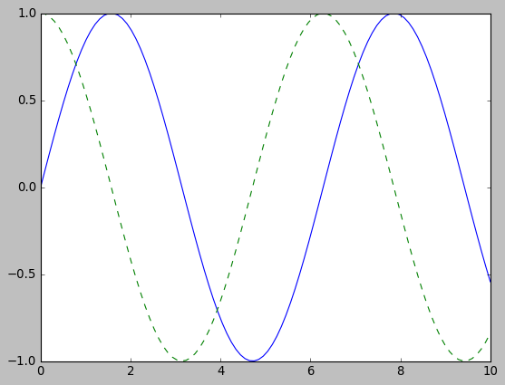
4.1.4 将图形保存为文件#
可用将图形保存为各种格式
fig.canvas.get_supported_filetypes() # 获取支持的格式
{'eps': 'Encapsulated Postscript',
'jpg': 'Joint Photographic Experts Group',
'jpeg': 'Joint Photographic Experts Group',
'pdf': 'Portable Document Format',
'pgf': 'PGF code for LaTeX',
'png': 'Portable Network Graphics',
'ps': 'Postscript',
'raw': 'Raw RGBA bitmap',
'rgba': 'Raw RGBA bitmap',
'svg': 'Scalable Vector Graphics',
'svgz': 'Scalable Vector Graphics',
'tif': 'Tagged Image File Format',
'tiff': 'Tagged Image File Format',
'webp': 'WebP Image Format'}
fig.savefig('my_figure.png')
通过IPython的Image对象显示图像文件
from IPython.display import Image
Image('my_figure.png')
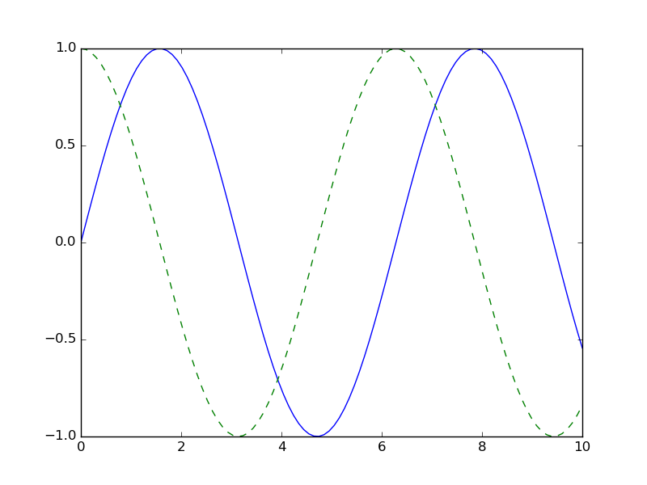
4.2 两种画图接口#
面向对象接口：更加强大
MATLAB画风接口
4.2.1 MATLAB风格接口#
位于pyplot（plt）接口中，
特性：有状态，任何plt命令都对应当前状态。 比如正在绘制第二个子图，就不太好回到第一个子图。！
plt.figure() # 生成两个子图
# 创建两个子图中的第一个，设置坐标轴
plt.subplot(2, 1, 1) # (行、列、子图编号)
plt.plot(x, np.sin(x))
# 创建两个子图中的第二个，设置坐标轴
plt.subplot(2, 1, 2)
plt.plot(x, np.cos(x));
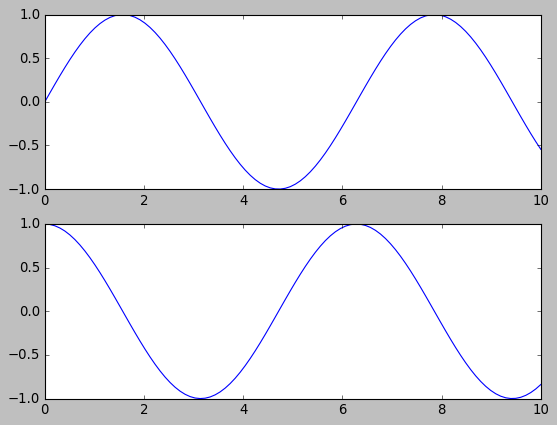
4.2.2 面向对象接口#
更加复杂。不会局限在当前状态中。而是通过明确调用figure和axes等方法访问之前的图。
即通过ax[i]调用plot， 而不是plt
# 先创建图形网格
# ax是一个包含两个Axes对象（子图）的数组
fig, ax = plt.subplots(2)
# 在每个对象上调用plot()方法
ax[0].plot(x, np.sin(x))
ax[1].plot(x, np.cos(x));
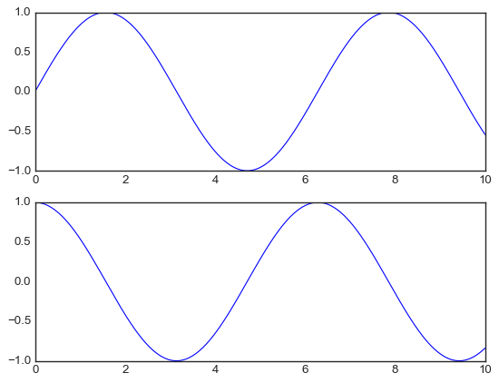
4.2.3 联系区别#
大多数plt函数都可以ax直接调用：plot, legend；但是一些设置函数ax需要set调用：plt.xlabel() → ax.set_xlabel()
简便的， ax会一起set： ax.set(xlim=(0, 10), ylim=(-2, 2), xlabel=’x’, ylabel=’sin(x)’, title=’A Simple Plot’);
plt更加简洁，ax,fig还要创建声明， plt导入即可调用
4.3 简易线形图#
# 导过一次了
%matplotlib inline
import matplotlib.pyplot as plt
plt.style.use('seaborn-v0_8-white')
import numpy as np
要画 Matplotlib 图形时，都需要先创建一个图形 fig 和一个坐标轴 ax。
figure是一个图形容器：坐标轴、文字、标签..。 figure 可以包含多个axes
axes是一个带有刻度、标签的矩形（坐标轴）
fig = plt.figure()
ax = plt.axes()
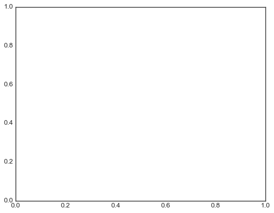
在ax矩形上绘图， ax.plot
fig = plt.figure()
ax = plt.axes()
x = np.linspace(0, 10, 1000)
ax.plot(x, np.sin(x));
ax.plot(x, np.cos(x))
[<matplotlib.lines.Line2D at 0x1c2fc37be00>]
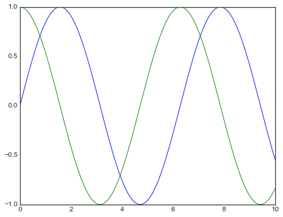
4.3.1 调整图形：线条的颜色与风格#
plot对图形的第一次调整是调整它线条的颜色与风格
import matplotlib.pyplot as plt
fig = plt.figure()
ax = plt.axes()
x = np.linspace(0, 10, 1000)
# 颜色
ax.plot(x, np.sin(x - 0), color='blue') # 标准颜色名称
ax.plot(x, np.sin(x - 1), color='g') # 缩写颜色代码（rgbcmyk）
ax.plot(x, np.sin(x - 2), color='0.75') # 范围在0~1的灰度值
ax.plot(x, np.sin(x - 3), color='#FFDD44') # 十六进制（RRGGBB，00~FF）
ax.plot(x, np.sin(x - 4), color=(1.0,0.2,0.3)) # RGB元组，范围在0~1
ax.plot(x, np.sin(x - 5), color='chartreuse'); # HTML颜色名称
# 风格
ax.plot(x, x + 0, linestyle='solid')
ax.plot(x, x + 1, linestyle='dashed')
ax.plot(x, x + 2, linestyle='dashdot')
ax.plot(x, x + 3, linestyle='dotted');
# 风格简写
ax.plot(x, x + 4, linestyle='-') # 实线
ax.plot(x, x + 5, linestyle='--') # 虚线
ax.plot(x, x + 6, linestyle='-.') # 点划线
ax.plot(x, x + 7, linestyle=':'); # 实点线
# 组合简写
plt.plot(x, x - 1, '-g') # 绿色实线
plt.plot(x, x - 2, '--c') # 青色虚线
plt.plot(x, x - 3, '-.k') # 黑色点划线
plt.plot(x, x - 4, ':r'); # 红色实点线
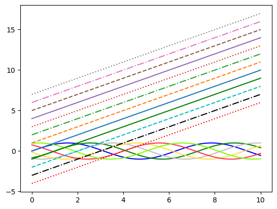
4.3.2 调整图形：坐标轴上下限#
会自动添加上下限，自定义：ax.set_xlim(), ax.set_ylim() 或者通过axis()一起设置（更加强大）
ax一般通过set设置
plt.axis('equal') # 保持X/Y比例一致 1:1
fig = plt.figure()
ax = plt.axes()
x = np.linspace(0, 10, 1000)
ax.plot(x, np.sin(x))
ax.set_xlim(-1, 11)
ax.set_ylim(-1.5, 1.5);
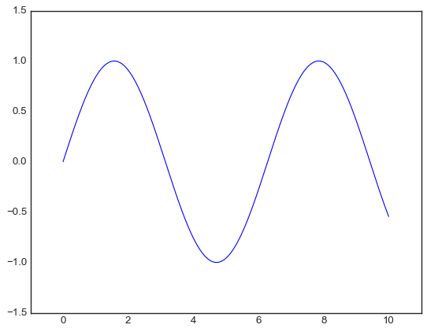
fig = plt.figure()
ax = plt.axes()
x = np.linspace(0, 10, 1000)
ax.plot(x, np.sin(x))
ax.axis([-1, 11, -1.5, 1.5]);
ax.axis('tight') # 缩进图
(np.float64(0.0),
np.float64(10.0),
np.float64(-0.9999972954811321),
np.float64(0.9999996994977832))
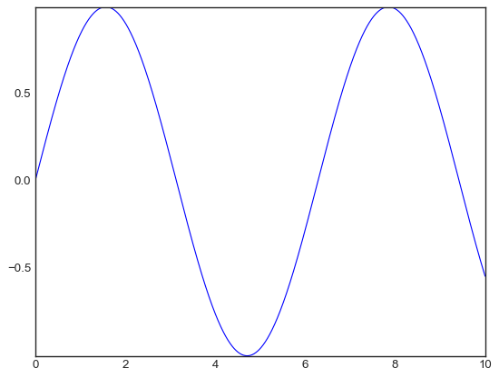
4.3.3 设置图形标签#
图形标题、坐标轴标题、简易图例。
fig = plt.figure()
ax = plt.axes()
x = np.linspace(0, 10, 1000)
ax.plot(x, np.sin(x))
ax.set_title("A Sine Curve")
ax.set_xlabel("x")
ax.set_ylabel("sin(x)");
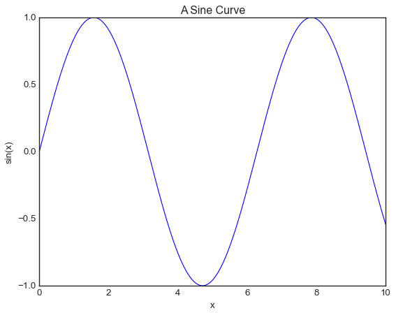
图例：legend
label参数指定， 自动进入图例
自定义legend
fig = plt.figure()
ax = plt.axes()
x = np.linspace(0, 10, 1000)
ax.plot(x, np.sin(x), '-g', label='sin(x)')
ax.plot(x, np.cos(x), ':b', label='cos(x)')
ax.axis('equal')
ax.set_title('label param')
ax.legend();
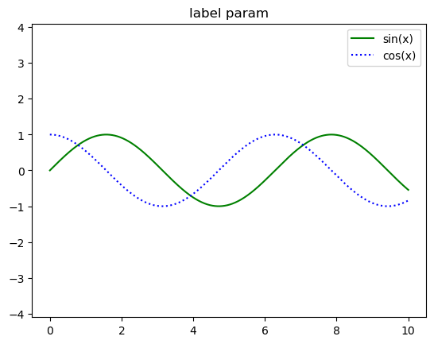
from sklearn.model_selection import train_test_split
from sklearn.datasets import make_blobs
fig, ax = plt.subplots()
X, y = make_blobs(
n_samples=100,
n_features=2,
centers=3,
random_state=0
)
X_train, X_test, y_train, y_test = train_test_split(
X, y, test_size=0.2, random_state=42
)
sca1 = ax.scatter(X_train[:,0], X_train[:, 1], c=y_train, marker='+')
sca2 = ax.scatter(X_test[:,0], X_test[:, 1], c=y_test, marker='*')
ax.legend(
handles =[sca1, sca2], # 使用哪些图
labels = ['Train', 'Test'],
loc='upper left'
)
<matplotlib.legend.Legend at 0x1cdd8747d90>
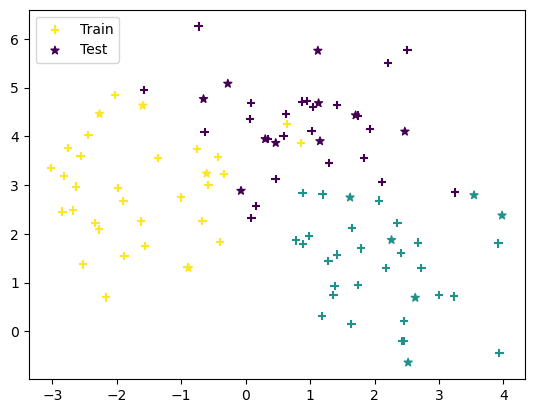
z注意：有些对象不支持handle,需要手动画线
4.4 简易散点图#
%matplotlib inline
import matplotlib.pyplot as plt
import numpy as np
4.4.1 用.plot画散点图#
x = np.linspace(0, 10, 30)
y = np.sin(x)
plt.plot(x, y, 'o', color='black');
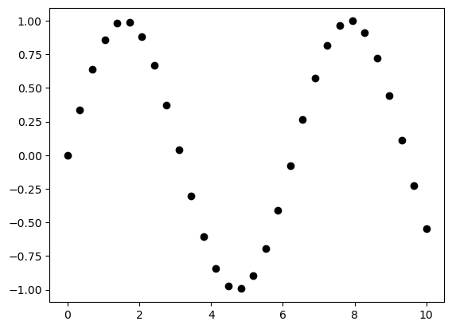
rng = np.random.RandomState(0)
for marker in ['o', '.', ',', 'x', '+', 'v', '^', '<', '>', 's', 'd']:
plt.plot(rng.rand(5), rng.rand(5), marker, # marker属性是 点 字符类型
label="marker='{0}'".format(marker))
plt.legend(numpoints=1)
plt.xlim(0, 1.8);
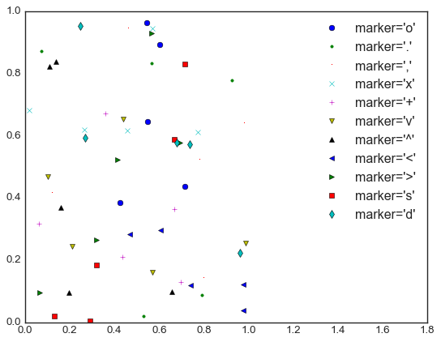
plt.plot(x, y, '-ok'); # 直线（-）、圆圈（o）、黑色（k） 把点连接起来。 简写color, marker, linestyle
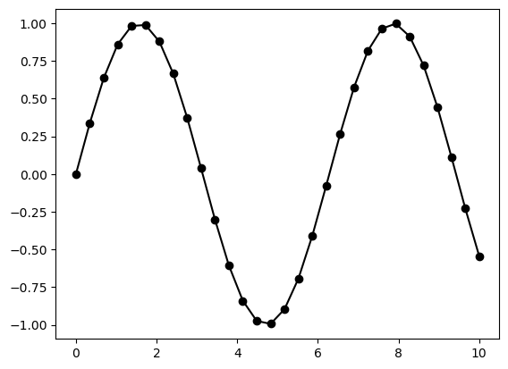
4.4.2 用plt.scatter画散点图#
与plot不同的是，scatter可用控制每个点，而plot是整体
控制每个点这个特性，可用更直观的看到样本聚集
plt.scatter(x, y, marker='o');
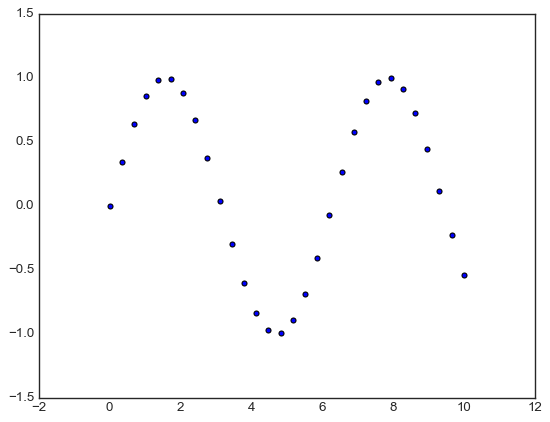
rng = np.random.RandomState(0)
x = rng.randn(100)
y = rng.randn(100)
colors = rng.rand(100)
sizes = 1000 * rng.rand(100)
plt.scatter(x, y, c=colors, s=sizes, alpha=0.3,
cmap='viridis')
plt.colorbar(); # 显示颜色条
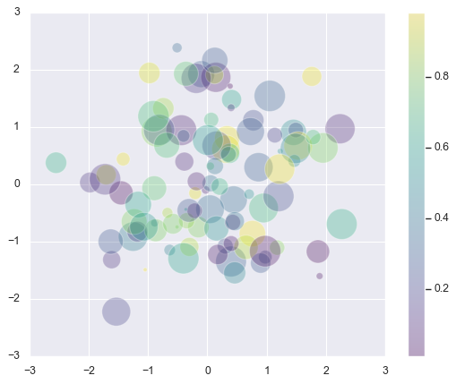
参数 |
作用 |
示例 |
|---|---|---|
|
数据点坐标 |
|
|
点的大小（默认 20） |
|
|
颜色（可以是单色，也可以是数组） |
|
|
点的形状 |
|
|
透明度（0~1） |
|
|
边缘颜色 |
|
cmap |
颜色映射表，把数字映射到几个颜色 |
|
4.5 可视化 误差#
4.5.1 基本误差线#
errobar
%matplotlib inline
import matplotlib.pyplot as plt
import numpy as np
x = np.linspace(0, 10, 50)
dy = 0.8
y = np.sin(x) + dy * np.random.randn(50)
plt.errorbar(x, y, yerr=dy, fmt='.k');
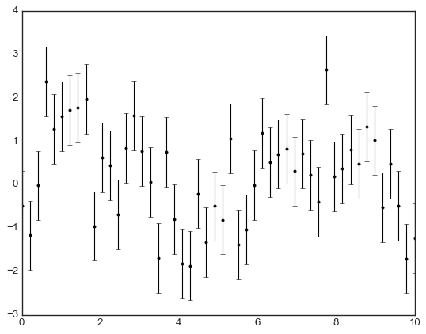
plt.errorbar(x, y, yerr=dy, fmt='o', color='black', ecolor='lightgray', elinewidth=3, capsize=0);
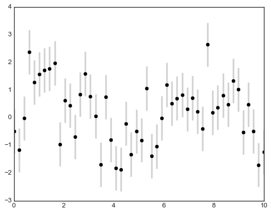
4.5.2 连续误差（连续变量）#
4.6 密度图与等高线图#
有时候可以用来表示三维数据
%matplotlib inline
import matplotlib.pyplot as plt
import numpy as np
三维函数的可视化
def f(x, y):
return np.sin(x) ** 10 + np.cos(10 + y * x) * np.cos(x)
x = np.linspace(0, 5, 50)
y = np.linspace(0, 5, 40)
X, Y = np.meshgrid(x, y) # 从一维数组构建二维网格数据
print(X,Y )
Z = f(X, Y)
[[0. 0.10204082 0.20408163 ... 4.79591837 4.89795918 5. ]
[0. 0.10204082 0.20408163 ... 4.79591837 4.89795918 5. ]
[0. 0.10204082 0.20408163 ... 4.79591837 4.89795918 5. ]
...
[0. 0.10204082 0.20408163 ... 4.79591837 4.89795918 5. ]
[0. 0.10204082 0.20408163 ... 4.79591837 4.89795918 5. ]
[0. 0.10204082 0.20408163 ... 4.79591837 4.89795918 5. ]] [[0. 0. 0. ... 0. 0. 0. ]
[0.12820513 0.12820513 0.12820513 ... 0.12820513 0.12820513 0.12820513]
[0.25641026 0.25641026 0.25641026 ... 0.25641026 0.25641026 0.25641026]
...
[4.74358974 4.74358974 4.74358974 ... 4.74358974 4.74358974 4.74358974]
[4.87179487 4.87179487 4.87179487 ... 4.87179487 4.87179487 4.87179487]
[5. 5. 5. ... 5. 5. 5. ]]
plt.contour(X, Y, Z, colors='black'); # 绘制等高线
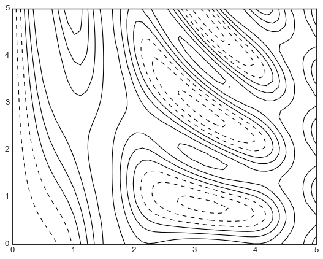
plt.contour(X, Y, Z, 20, cmap='RdGy');
plt.colorbar(); # 绘制颜色对应信息
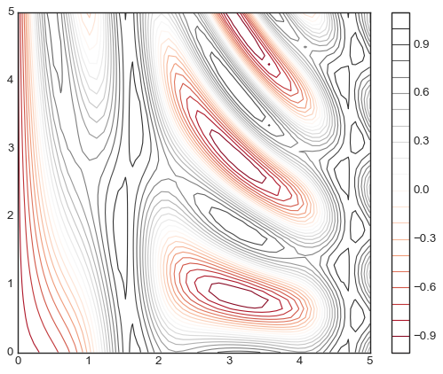
通过imshow做的更加连续化，而非线条化。
plt.imshow(Z, extent=[0, 5, 0, 5], origin='lower', cmap='RdGy')
plt.colorbar()
plt.axis();
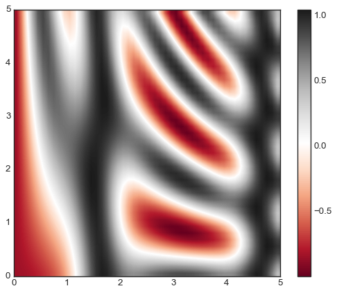
还可以一起 将等高线 和 连续图 放在一起。
contours = plt.contour(X, Y, Z, 3, colors='black')
plt.clabel(contours, inline=True, fontsize=8) # 带数据标签的等高线
plt.imshow(Z, extent=[0, 5, 0, 5], origin='lower', cmap='RdGy', alpha=0.5)
plt.colorbar();
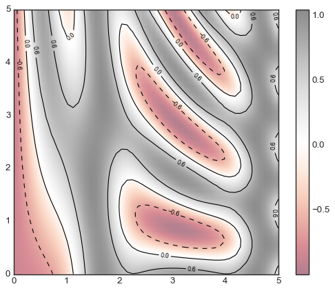
绘制二维等高线图#
等高线必须绘制网格
把值要放在网格点上
import numpy as np
import matplotlib.pyplot as plt
from scipy.stats import multivariate_normal
# 二维等高线图，
def plot_contour(x1, x2, y_func):
fig = plt.figure()
x1_space = np.linspace(min(x1), max(x1), 1000)
x2_space = np.linspace(min(x2), max(x2), 1000)
x1_grid, x2_grid = np.meshgrid(x1_space, x2_space)
y_grid = y_func(np.column_stack([x1_grid.ravel(), x2_grid.ravel()]))
y_grid = y_grid.reshape(x1_grid.shape)
plt.contour(x1_grid, x2_grid, y_grid)
plt.scatter(x1, x2, s=10)
plt.axis('equal')
plt.tight_layout()
covariance = np.array([
[1, 0],
[0, 1]
])
X = np.random.randn(1000, 2)
rv = multivariate_normal(mean=[0, 0], cov= covariance)
plot_contour(X[:, 0], X[:, 1], y_func=rv.pdf)
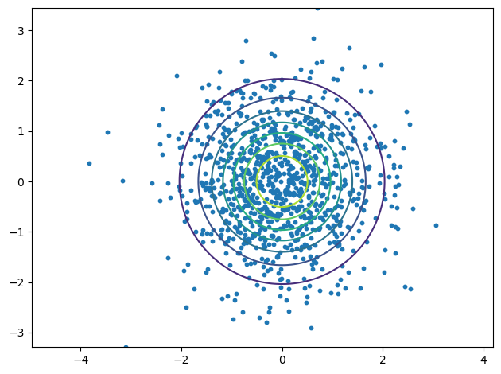
4.7 频次直方图、数据区间划分和分布密度#
import numpy as np
import matplotlib.pyplot as plt
data = np.random.randn(1000)
data.shape
(1000,)
hist参数
参数 |
描述 |
示例 |
|---|---|---|
|
柱子的数量或区间边界 |
|
|
透明度（0 到 1） |
|
|
是否显示为概率密度 |
|
|
柱子的颜色 |
|
|
设置柱子边框颜色 |
|
|
设置柱子的边框宽度 |
|
|
直方图的显示范围 |
|
|
对齐方式 |
|
|
直方图的类型（条形图、线图等） |
|
|
是否显示为累积直方图 |
|
|
为图例指定标签 |
|
plt.hist(data);
---------------------------------------------------------------------------
NameError Traceback (most recent call last)
Cell In[1], line 1
----> 1 plt.hist(data);
NameError: name 'plt' is not defined
二维频次直方图与数据区间划分
mean = [0, 0]
cov = [[1, 1], [1, 2]]
x, y = np.random.multivariate_normal(mean, cov, 10000).T
plt.hist2d：二维频次直方图
plt.hist2d(x, y, bins=30, cmap='Blues')
cb = plt.colorbar()
cb.set_label('counts in bin')
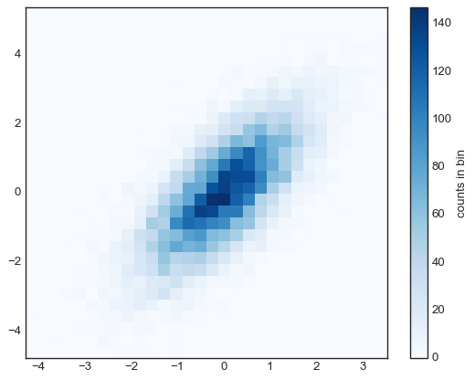
plt.hexbin：六边形区间划分
plt.hexbin(x, y, gridsize=30, cmap='Blues')
cb = plt.colorbar(label='count in bin')
核密度估计：更常见的多维数据分布密度
传统的频数分布通过离散点统计表示
KDE通过核函数在每个离散点附近做连续函数，从而连起来产生平滑的概率密度统计
from scipy.stats import gaussian_kde
# 拟合数组维度[Ndim, Nsamples]
data = np.vstack([x, y])
kde = gaussian_kde(data)
# 用一对规则的网格数据进行拟合
xgrid = np.linspace(-3.5, 3.5, 40)
ygrid = np.linspace(-6, 6, 40)
Xgrid, Ygrid = np.meshgrid(xgrid, ygrid)
Z = kde.evaluate(np.vstack([Xgrid.ravel(), Ygrid.ravel()]))
# 画出结果图
plt.imshow(Z.reshape(Xgrid.shape),
origin='lower', aspect='auto',
extent=[-3.5, 3.5, -6, 6],
cmap='Blues')
cb = plt.colorbar()
cb.set_label("density")
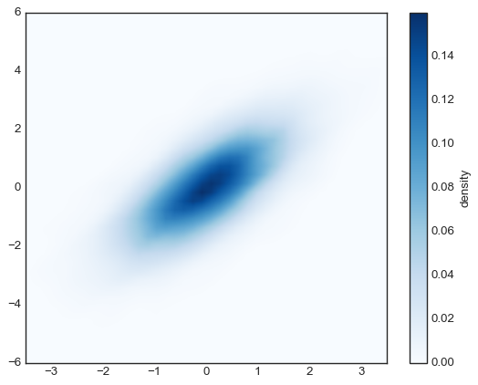
4.8 配置图例 legend#
默认的配置
import matplotlib.pyplot as plt
import numpy as np
x = np.linspace(0, 10, 1000)
fig, ax = plt.subplots()
ax.plot(x, np.sin(x), '-b', label='Sine')
ax.plot(x, np.cos(x), '--r', label='Cosine')
ax.axis('equal')
leg = ax.legend();
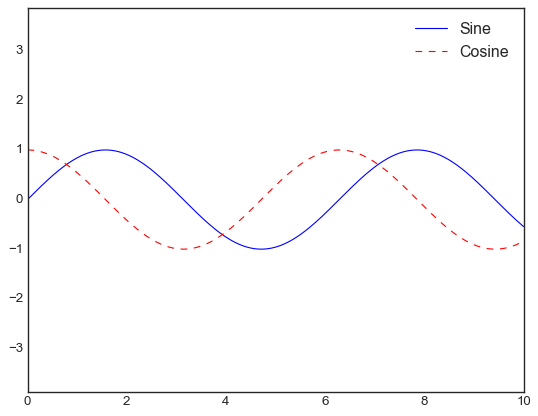
4.8.1 选择图例显示的元素#
4.8.2 在图例中显示不同尺寸的点#
比如通过圈圈大小显示其人口数
import pandas as pd
cities = pd.read_csv('california_cities.csv')
# 提取感兴趣的数据
lat, lon = cities['latd'], cities['longd']
population, area = cities['population_total'], cities['area_total_km2']
# 用不同尺寸和颜色的散点图表示数据，但是不带标签
plt.scatter(lon, lat, label=None,
c=np.log10(population), cmap='viridis',
s=area, linewidth=0, alpha=0.5)
plt.axis('equal')
plt.xlabel('longitude')
plt.ylabel('latitude')
plt.colorbar(label='log$_{10}$(population)')
plt.clim(3, 7)
# 下面创建一个图例：
# 画一些带标签和尺寸的空列表
for area in [100, 300, 500]:
plt.scatter([], [], c='k', alpha=0.3, s=area,
label=str(area) + ' km$^2$')
plt.legend(scatterpoints=1, frameon=False,
labelspacing=1, title='City Area')
plt.title('California Cities: Area and Population')
Text(0.5, 1.0, 'California Cities: Area and Population')
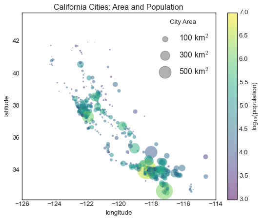
4.9 配置颜色条#
plt.imshow(data, cmap='gray', interpolation='none', aspect='auto', extent=[x_min, x_max, y_min, y_max])
绘制data形状的像素网格。
X 轴是 数组的列索引 (0 ~ 19)，Y 轴是 数组的行索引 (0~9)。
默认左上角是 (0,0)，行向下增长。
extent=[-5, 5, -2, 2] 调整索引长度
aspect=’auto’自适应比例，
import numpy as np
import matplotlib.pyplot as plt
data = np.array([[0, 1],
[1, 2]]) # 2×2 的数组
plt.imshow(data, cmap="gray", interpolation="nearest") # 关闭插值，保持像素格
plt.colorbar() # 添加颜色条
plt.show()
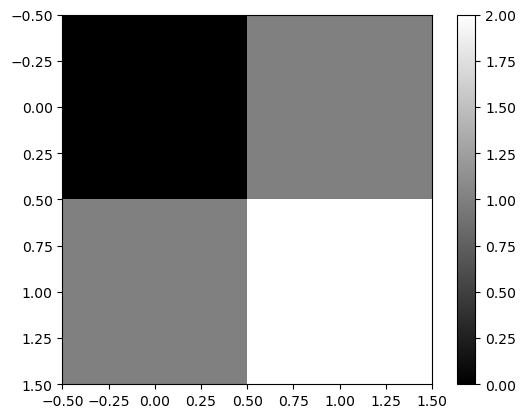
x = np.linspace(0, 10, 1000)
I = np.sin(x) * np.cos(x[:, np.newaxis])
plt.imshow(I)
plt.colorbar();
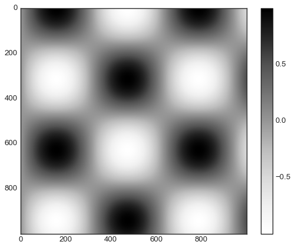
4.9.1 配置颜色条#
通过cmap参数
plt.imshow(I, cmap='gray');
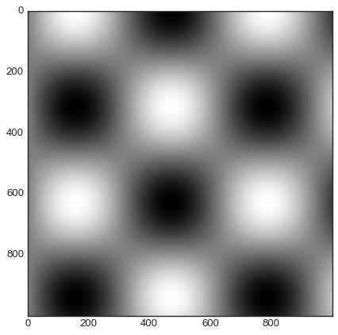
4.9.2 案例：手写数字#
from sklearn.datasets import load_digits
digits = load_digits(n_class=6)
fig, ax = plt.subplots(8, 8, figsize=(6, 6))
for i, axi in enumerate(ax.flat):
axi.imshow(digits.images[i], cmap='binary')
axi.set(xticks=[], yticks=[])
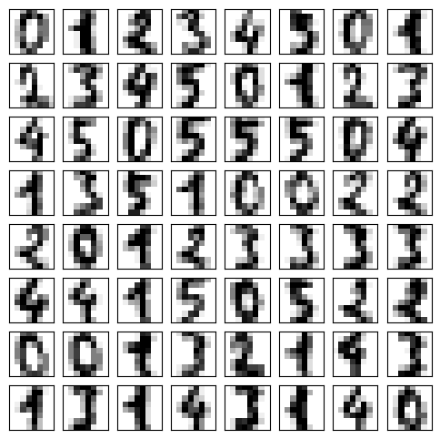
4.9.3 colorbar#
colorbar 是Plt , fig的函数接口
colorbar 多子图中需要指定ax!!
matplotlib.cm：处理 colormap，用于从数值获取颜色。
matplotlib.colors：处理 颜色归一化、转换、定义新颜色。
多子图公用一个colorbar
import matplotlib.pyplot as plt
import numpy as np
import matplotlib.cm as cm
import matplotlib.colors as mcolors
# 创建 3x3 子图，X 轴共享列，Y 轴共享行
fig, axes = plt.subplots(3, 3, sharex='col', sharey='row', figsize=(8, 8))
# 颜色映射
vmin, vmax = 0, 1 # 设定 colorbar 的范围
cmap = cm.binary
norm = mcolors.Normalize(vmin=vmin, vmax=vmax)
# 创建 ScalarMappable（用于 colorbar）
sm = cm.ScalarMappable(cmap=cmap, norm=norm)
sm.set_array([]) # 避免 colorbar() 警告
# 遍历子图
for row in axes:
for ax in row:
img = np.random.rand(8, 8) # 生成 8x8 数据
ax.imshow(img, cmap=cmap, norm=norm) # ✅ 直接用 sm 的 cmap 和 norm
# 统一色条
fig.colorbar(sm, ax=axes.ravel(), orientation="vertical")
<matplotlib.colorbar.Colorbar at 0x21e53823350>
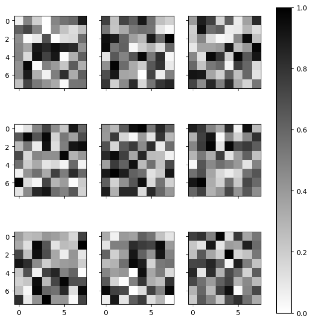
4.10 多子图#
画中画（inset）、网格图（grid of plots），或者是其他更复杂的布局形式
一个figure，而ax有多个
%matplotlib inline
import matplotlib.pyplot as plt
import numpy as np
4.10.1 plt.axes：手动创建子图#
ax1 = plt.axes() # 默认坐标轴
ax2 = plt.axes([0.65, 0.65, 0.2, 0.2]) # 百分比高度，
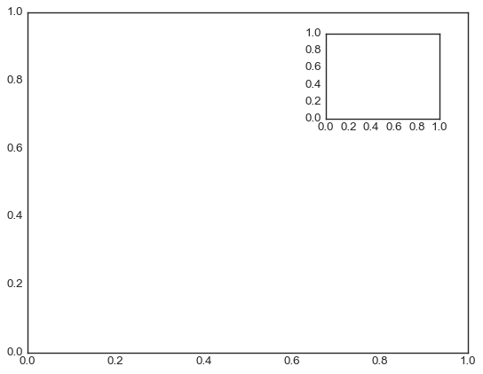
4.10.2 plt.subplot：简易网格子图：若干彼此对齐的行列子图#
for i in range(1, 7):
plt.subplot(2, 3, i)
plt.text(0.5, 0.5, str((2, 3, i)),
fontsize=18, ha='center')
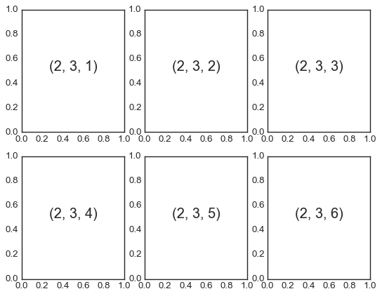
4.10.3 plt.subplots：用一行代码创建网格#
subplot不能隐藏坐标轴啥的， 太简单了
s表示一次创建多个
fig, axes = plt.subplots(2, 3, sharex='col', sharey='row')
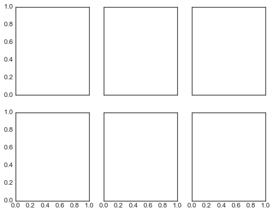
4.10.4 plt.GridSpec：实现更复杂的排列方式#
不规格的网格图
grid = plt.GridSpec(2, 3, wspace=0.4, hspace=0.3)
plt.subplot(grid[0, 0])
plt.subplot(grid[0, 1:])
plt.subplot(grid[1, :2])
plt.subplot(grid[1, 2]);
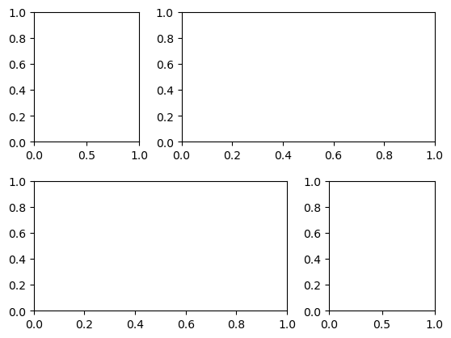
4.10.5 add_subplot 直接添加#
fig = plt.figure(figsize=(10 ,4))
ax1 = fig.add_subplot(1, 2, 1)
ax2 = fig.add_subplot(1, 2, 2)
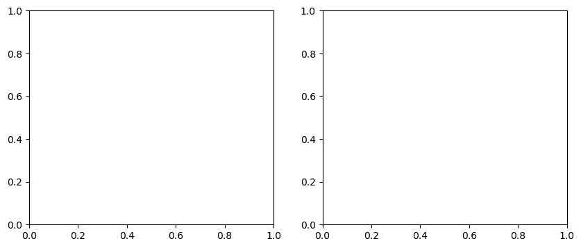
# 创建一些正态分布数据
mean = [0, 0]
cov = [[1, 1], [1, 2]]
x, y = np.random.multivariate_normal(mean, cov, 3000).T
# 设置坐标轴和网格配置方式
fig = plt.figure(figsize=(6, 6))
grid = plt.GridSpec(4, 4, hspace=0.2, wspace=0.2)
main_ax = fig.add_subplot(grid[:-1, 1:])
y_hist = fig.add_subplot(grid[:-1, 0], xticklabels=[], sharey=main_ax)
x_hist = fig.add_subplot(grid[-1, 1:], yticklabels=[], sharex=main_ax)
# 主坐标轴画散点图
main_ax.plot(x, y, 'ok', markersize=3, alpha=0.2)
# 次坐标轴画频次直方图
x_hist.hist(x, 40, histtype='stepfilled',
orientation='vertical', color='gray')
x_hist.invert_yaxis()
y_hist.hist(y, 40, histtype='stepfilled',
orientation='horizontal', color='gray')
y_hist.invert_xaxis()
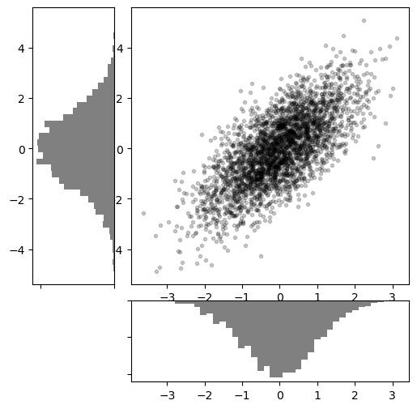
4.11 文字与注释#
import matplotlib.pyplot as plt
import matplotlib as mpl
import numpy as np
import pandas as pd
births = pd.read_csv('births.csv')
births.head()
| year | month | day | gender | births | |
|---|---|---|---|---|---|
| 0 | 1969 | 1 | 1.0 | F | 4046 |
| 1 | 1969 | 1 | 1.0 | M | 4440 |
| 2 | 1969 | 1 | 2.0 | F | 4454 |
| 3 | 1969 | 1 | 2.0 | M | 4548 |
| 4 | 1969 | 1 | 3.0 | F | 4548 |
quartiles = np.percentile(births['births'], [25, 50, 75])
quartiles
array([4358. , 4814. , 5289.5])
mu, sig = quartiles[1], 0.74 * (quartiles[2] - quartiles[0])
mu,sig
(np.float64(4814.0), np.float64(689.31))
births = births.query('(births > @mu - 5 * @sig) & (births < @mu + 5 * @sig)')
births.head()
| year | month | day | gender | births | |
|---|---|---|---|---|---|
| 0 | 1969 | 1 | 1 | F | 4046 |
| 1 | 1969 | 1 | 1 | M | 4440 |
| 2 | 1969 | 1 | 2 | F | 4454 |
| 3 | 1969 | 1 | 2 | M | 4548 |
| 4 | 1969 | 1 | 3 | F | 4548 |
births['day'] = births['day'].astype(int)
births.head()
| year | month | day | gender | births | |
|---|---|---|---|---|---|
| 0 | 1969 | 1 | 1 | F | 4046 |
| 1 | 1969 | 1 | 1 | M | 4440 |
| 2 | 1969 | 1 | 2 | F | 4454 |
| 3 | 1969 | 1 | 2 | M | 4548 |
| 4 | 1969 | 1 | 3 | F | 4548 |
births.index = pd.to_datetime(10000 * births.year + 100 * births.month + births.day, format= '%Y%m%d' )
births.index
DatetimeIndex(['1969-01-01', '1969-01-01', '1969-01-02', '1969-01-02',
'1969-01-03', '1969-01-03', '1969-01-04', '1969-01-04',
'1969-01-05', '1969-01-05',
...
'1988-12-27', '1988-12-27', '1988-12-28', '1988-12-28',
'1988-12-29', '1988-12-29', '1988-12-30', '1988-12-30',
'1988-12-31', '1988-12-31'],
dtype='datetime64[ns]', length=14610, freq=None)
births_by_date = births.pivot_table('births',
[births.index.month, births.index.day])
births_by_date
| births | ||
|---|---|---|
| 1 | 1 | 4009.225 |
| 2 | 4247.400 | |
| 3 | 4500.900 | |
| 4 | 4571.350 | |
| 5 | 4603.625 | |
| ... | ... | ... |
| 12 | 27 | 4850.150 |
| 28 | 5044.200 | |
| 29 | 5120.150 | |
| 30 | 5172.350 | |
| 31 | 4859.200 |
366 rows × 1 columns
births_by_date.index = [pd.Timestamp(2012, month, day)
for (month, day) in births_by_date.index]
births_by_date
| births | |
|---|---|
| 2012-01-01 | 4009.225 |
| 2012-01-02 | 4247.400 |
| 2012-01-03 | 4500.900 |
| 2012-01-04 | 4571.350 |
| 2012-01-05 | 4603.625 |
| ... | ... |
| 2012-12-27 | 4850.150 |
| 2012-12-28 | 5044.200 |
| 2012-12-29 | 5120.150 |
| 2012-12-30 | 5172.350 |
| 2012-12-31 | 4859.200 |
366 rows × 1 columns
fig, ax = plt.subplots(figsize = (12,4))
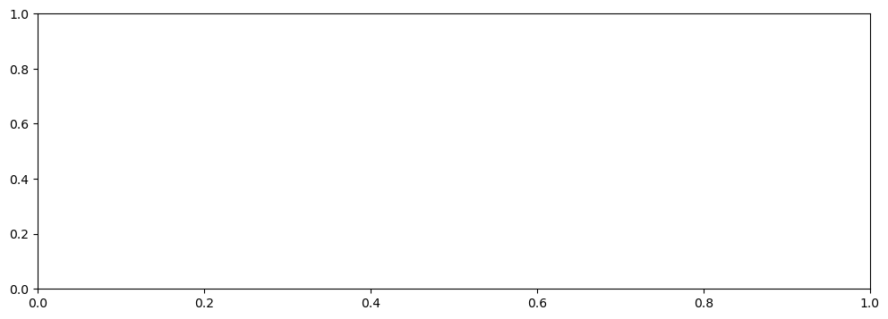
ax.plot(births_by_date)
fig
C:\Users\63517\AppData\Local\Temp\ipykernel_13876\4018282542.py:1: UserWarning: This axis already has a converter set and is updating to a potentially incompatible converter
ax.plot(births_by_date)
---------------------------------------------------------------------------
IndexError Traceback (most recent call last)
File D:\miniconda3\Lib\site-packages\matplotlib\axis.py:1822, in Axis.convert_units(self, x)
1821 try:
-> 1822 ret = self._converter.convert(x, self.units, self)
1823 except Exception as e:
File D:\miniconda3\Lib\site-packages\matplotlib\dates.py:1834, in _SwitchableDateConverter.convert(self, *args, **kwargs)
1833 def convert(self, *args, **kwargs):
-> 1834 return self._get_converter().convert(*args, **kwargs)
File D:\miniconda3\Lib\site-packages\matplotlib\dates.py:1762, in DateConverter.convert(value, unit, axis)
1756 """
1757 If *value* is not already a number or sequence of numbers, convert it
1758 with `date2num`.
1759
1760 The *unit* and *axis* arguments are not used.
1761 """
-> 1762 return date2num(value)
File D:\miniconda3\Lib\site-packages\matplotlib\dates.py:444, in date2num(d)
443 return d
--> 444 tzi = getattr(d[0], 'tzinfo', None)
445 if tzi is not None:
446 # make datetime naive:
IndexError: too many indices for array: array is 0-dimensional, but 1 were indexed
The above exception was the direct cause of the following exception:
ConversionError Traceback (most recent call last)
File D:\miniconda3\Lib\site-packages\IPython\core\formatters.py:402, in BaseFormatter.__call__(self, obj)
400 pass
401 else:
--> 402 return printer(obj)
403 # Finally look for special method names
404 method = get_real_method(obj, self.print_method)
File D:\miniconda3\Lib\site-packages\IPython\core\pylabtools.py:170, in print_figure(fig, fmt, bbox_inches, base64, **kwargs)
167 from matplotlib.backend_bases import FigureCanvasBase
168 FigureCanvasBase(fig)
--> 170 fig.canvas.print_figure(bytes_io, **kw)
171 data = bytes_io.getvalue()
172 if fmt == 'svg':
File D:\miniconda3\Lib\site-packages\matplotlib\backend_bases.py:2155, in FigureCanvasBase.print_figure(self, filename, dpi, facecolor, edgecolor, orientation, format, bbox_inches, pad_inches, bbox_extra_artists, backend, **kwargs)
2152 # we do this instead of `self.figure.draw_without_rendering`
2153 # so that we can inject the orientation
2154 with getattr(renderer, "_draw_disabled", nullcontext)():
-> 2155 self.figure.draw(renderer)
2156 if bbox_inches:
2157 if bbox_inches == "tight":
File D:\miniconda3\Lib\site-packages\matplotlib\artist.py:94, in _finalize_rasterization.<locals>.draw_wrapper(artist, renderer, *args, **kwargs)
92 @wraps(draw)
93 def draw_wrapper(artist, renderer, *args, **kwargs):
---> 94 result = draw(artist, renderer, *args, **kwargs)
95 if renderer._rasterizing:
96 renderer.stop_rasterizing()
File D:\miniconda3\Lib\site-packages\matplotlib\artist.py:71, in allow_rasterization.<locals>.draw_wrapper(artist, renderer)
68 if artist.get_agg_filter() is not None:
69 renderer.start_filter()
---> 71 return draw(artist, renderer)
72 finally:
73 if artist.get_agg_filter() is not None:
File D:\miniconda3\Lib\site-packages\matplotlib\figure.py:3257, in Figure.draw(self, renderer)
3254 # ValueError can occur when resizing a window.
3256 self.patch.draw(renderer)
-> 3257 mimage._draw_list_compositing_images(
3258 renderer, self, artists, self.suppressComposite)
3260 renderer.close_group('figure')
3261 finally:
File D:\miniconda3\Lib\site-packages\matplotlib\image.py:134, in _draw_list_compositing_images(renderer, parent, artists, suppress_composite)
132 if not_composite or not has_images:
133 for a in artists:
--> 134 a.draw(renderer)
135 else:
136 # Composite any adjacent images together
137 image_group = []
File D:\miniconda3\Lib\site-packages\matplotlib\artist.py:71, in allow_rasterization.<locals>.draw_wrapper(artist, renderer)
68 if artist.get_agg_filter() is not None:
69 renderer.start_filter()
---> 71 return draw(artist, renderer)
72 finally:
73 if artist.get_agg_filter() is not None:
File D:\miniconda3\Lib\site-packages\matplotlib\axes\_base.py:3181, in _AxesBase.draw(self, renderer)
3178 if artists_rasterized:
3179 _draw_rasterized(self.get_figure(root=True), artists_rasterized, renderer)
-> 3181 mimage._draw_list_compositing_images(
3182 renderer, self, artists, self.get_figure(root=True).suppressComposite)
3184 renderer.close_group('axes')
3185 self.stale = False
File D:\miniconda3\Lib\site-packages\matplotlib\image.py:134, in _draw_list_compositing_images(renderer, parent, artists, suppress_composite)
132 if not_composite or not has_images:
133 for a in artists:
--> 134 a.draw(renderer)
135 else:
136 # Composite any adjacent images together
137 image_group = []
File D:\miniconda3\Lib\site-packages\matplotlib\artist.py:71, in allow_rasterization.<locals>.draw_wrapper(artist, renderer)
68 if artist.get_agg_filter() is not None:
69 renderer.start_filter()
---> 71 return draw(artist, renderer)
72 finally:
73 if artist.get_agg_filter() is not None:
File D:\miniconda3\Lib\site-packages\matplotlib\text.py:762, in Text.draw(self, renderer)
760 if np.ma.is_masked(y):
761 y = np.nan
--> 762 posx = float(self.convert_xunits(x))
763 posy = float(self.convert_yunits(y))
764 posx, posy = trans.transform((posx, posy))
File D:\miniconda3\Lib\site-packages\matplotlib\artist.py:278, in Artist.convert_xunits(self, x)
276 if ax is None or ax.xaxis is None:
277 return x
--> 278 return ax.xaxis.convert_units(x)
File D:\miniconda3\Lib\site-packages\matplotlib\axis.py:1824, in Axis.convert_units(self, x)
1822 ret = self._converter.convert(x, self.units, self)
1823 except Exception as e:
-> 1824 raise munits.ConversionError('Failed to convert value(s) to axis '
1825 f'units: {x!r}') from e
1826 return ret
ConversionError: Failed to convert value(s) to axis units: '2012-1-1'
<Figure size 1200x400 with 1 Axes>
添加文字标题
fig, ax = plt.subplots(figsize=(12, 4))
births_by_date.plot(ax=ax)
# 在图上增加文字标签
style = dict(size=10, color='gray')
ax.text('2012-1-1', 3950, "New Year's Day", **style)
ax.text('2012-7-4', 4250, "Independence Day", ha='center', **style)
ax.text('2012-9-4', 4850, "Labor Day", ha='center', **style)
ax.text('2012-10-31', 4600, "Halloween", ha='right', **style)
ax.text('2012-11-25', 4450, "Thanksgiving", ha='center', **style)
ax.text('2012-12-25', 3850, "Christmas ", ha='right', **style)
# 设置坐标轴标题
ax.set(title='USA births by day of year (1969-1988)',
ylabel='average daily births')
# 设置x轴刻度值，让月份居中显示
ax.xaxis.set_major_locator(mpl.dates.MonthLocator())
ax.xaxis.set_minor_locator(mpl.dates.MonthLocator(bymonthday=15))
ax.xaxis.set_major_formatter(plt.NullFormatter())
ax.xaxis.set_minor_formatter(mpl.dates.DateFormatter('%h'));
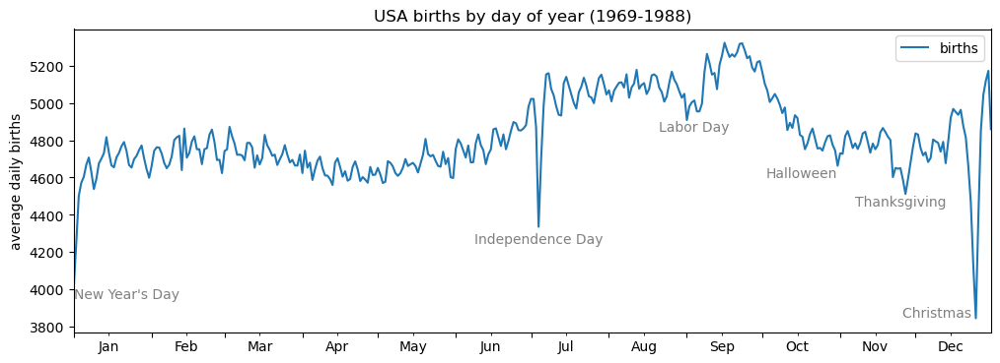
4.11.2 坐标变换与文字位置#
4.11.3 箭头与注释#
plt.annonate 既可以画箭头 又能注释
fig, ax = plt.subplots()
x = np.linspace(0, 20, 1000)
ax.plot(x, np.cos(x))
ax.axis('equal')
ax.annotate('local maximum', xy=(6.28, 1), xytext=(10, 4),
arrowprops=dict(facecolor='black', shrink=0.05))
ax.annotate('local minimum', xy=(5 * np.pi, -1), xytext=(2, -6),
arrowprops=dict(arrowstyle="->",
connectionstyle="angle3,angleA=0,angleB=-90"));
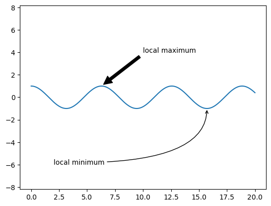
4.12 自定义坐标轴刻度#
4.12.1 主要刻度与次要刻度#
import matplotlib.pyplot as plt
import numpy as np
ax = plt.axes(xscale='log', yscale='log')
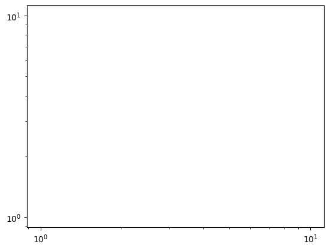
！每个坐标轴的 formatter（刻度） 与 locator 对象（标签） 设置坐标轴
4.12.2 隐藏刻度与标签#
ax = plt.axes()
ax.plot(np.random.rand(50))
ax.yaxis.set_major_locator(plt.NullLocator()) # 隐藏刻度
ax.xaxis.set_major_formatter(plt.NullFormatter()) # 隐藏标签
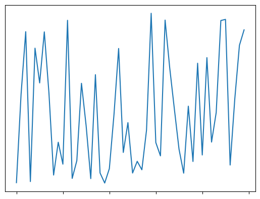
比如人脸数据图像，不需要刻度
fig, ax = plt.subplots(5, 5, figsize=(5, 5)) # 行，列，fig宽高
fig.subplots_adjust(hspace=0, wspace=0) # 调整subplots
# 从scikit-learn获取一些人脸照片数据
from sklearn.datasets import fetch_olivetti_faces
faces = fetch_olivetti_faces().images
for i in range(5):
for j in range(5):
ax[i, j].xaxis.set_major_locator(plt.NullLocator())
ax[i, j].yaxis.set_major_locator(plt.NullLocator())
ax[i, j].imshow(faces[10 * i + j], cmap="bone")
downloading Olivetti faces from https://ndownloader.figshare.com/files/5976027 to C:\Users\63517\scikit_learn_data
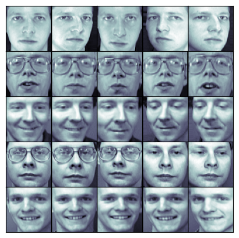
4.12.3 增减刻度数量#
fig, ax = plt.subplots(4, 4, sharex=True, sharey=True)
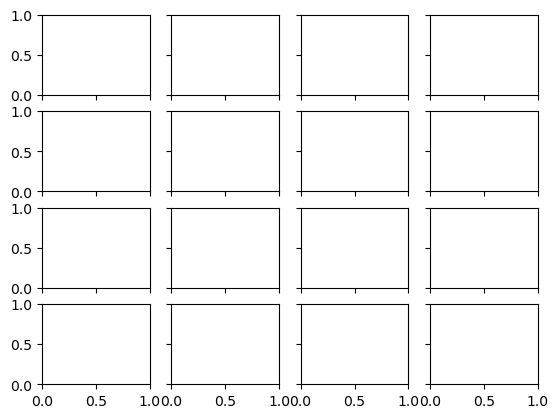
4.12.4 花哨的刻度格式#
# 画正弦曲线和余弦曲线
fig, ax = plt.subplots()
x = np.linspace(0, 3 * np.pi, 1000)
ax.plot(x, np.sin(x), lw=3, label='Sine')
ax.plot(x, np.cos(x), lw=3, label='Cosine')
# 设置网格、图例和坐标轴上下限
ax.grid(True)
ax.legend(frameon=False)
ax.axis('equal')
ax.set_xlim(0, 3 * np.pi);
ax.xaxis.set_major_locator(plt.MultipleLocator(np.pi / 2))
ax.xaxis.set_minor_locator(plt.MultipleLocator(np.pi / 4))
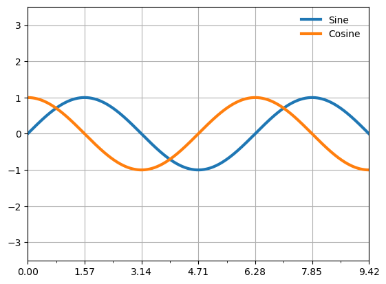
4.13 Matplotlib自定义：配置文件与样式表#
4.14 用Matplotlib画三维图#
from mpl_toolkits import mplot3d
import numpy as np
import matplotlib.pyplot as plt
fig = plt.figure()
ax = plt.axes(projection='3d') # 3D坐标轴
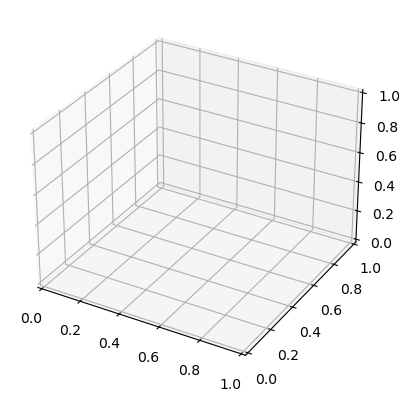
4.14.1 三维数据点与线#
%matplotlib inline
ax = plt.axes(projection='3d')
# 三维线的数据
zline = np.linspace(0, 15, 1000)
xline = np.sin(zline)
yline = np.cos(zline)
ax.plot3D(xline, yline, zline, 'gray')
# 三维散点的数据
zdata = 15 * np.random.random(100)
xdata = np.sin(zdata) + 0.1 * np.random.randn(100)
ydata = np.cos(zdata) + 0.1 * np.random.randn(100)
ax.scatter3D(xdata, ydata, zdata, c=zdata, cmap='Greens');
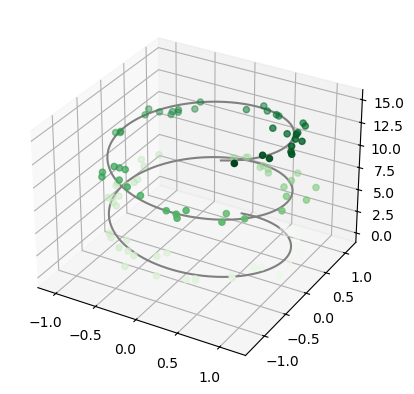
4.14.2 三维等高线图#
import numpy as np
def f(x, y):
return np.sin(np.sqrt(x ** 2 + y ** 2))
x = np.linspace(-6, 6, 30)
y = np.linspace(-6, 6, 30)
X, Y = np.meshgrid(x, y)
Z = f(X, Y)
print(X.shape, Y.shape, Z.shape)
fig = plt.figure()
ax = plt.axes(projection='3d')
ax.contour3D(X, Y, Z, 50, cmap='binary')
ax.set_xlabel('x')
ax.set_ylabel('y')
ax.set_zlabel('z');
(30, 30) (30, 30) (30, 30)
(30, 30)
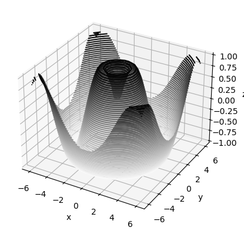
ax.view_init(60, 35) # 扭转角度
fig
4.14.4 曲面三角剖分#
有时候数据没那么多，通过三点构建曲面三角，构建整体图像
theta = 2 * np.pi * np.random.random(1000)
r = 6 * np.random.random(1000)
x = np.ravel(r * np.sin(theta))
y = np.ravel(r * np.cos(theta))
z = f(x, y)
ax = plt.axes(projection='3d')
ax.scatter(x, y, z, c=z, cmap='viridis', linewidth=0.5);
ax = plt.axes(projection='3d')
ax.plot_trisurf(x, y, z, cmap='viridis', edgecolor='none'); # 把散点连起来三角
案例：莫比乌斯带
莫比乌斯带的参数方程为：
$$ x = (1 + v \cos \frac{u}{2}) \cos u $$
$$ y = (1 + v \cos \frac{u}{2}) \sin u $$
$$ z = v \sin \frac{u}{2} $$
其中：
$( u \in [0, 2\pi])$ 控制绕圈的角度。
$( v \in [-w, w] ) $控制带的宽度。
theta = np.linspace(0, 2 * np.pi, 30)
w = np.linspace(-0.25, 0.25, 8)
w, theta = np.meshgrid(w, theta)
phi = 0.5 * theta
# x - y平面内的半径
r = 1 + w * np.cos(phi)
x = np.ravel(r * np.cos(theta)) # np.ravel多维数组展成一维数组
y = np.ravel(r * np.sin(theta))
z = np.ravel(w * np.sin(phi))
from matplotlib.tri import Triangulation
tri = Triangulation(np.ravel(w), np.ravel(theta))
ax = plt.axes(projection='3d')
ax.plot_trisurf(x, y, z, triangles=tri.triangles,
cmap='viridis', linewidths=0.2);
ax.set_xlim(-1, 1); ax.set_ylim(-1, 1); ax.set_zlim(-1, 1);
4.15 用Basemap可视化地理数据 （过时）现在：cartopy#
4.17 Animation动画#
绘制hline和vline#
vline(x坐标,y起始,y终止)
t = np.arange(0, 5, 0.1) # 时间点
s = np.exp(-t) + np.sin(2 * np.pi* t) # 一个正弦波，随着时间指数衰减
nse = np.random.normal(0, 0.1, t.shape) * s # 引入噪声
fig, (vax, hax) = plt.subplots(1, 2, figsize=(12,6))
vax.plot(t, s+nse, '^') #
vax.vlines(t, [0], s) # 没有噪声的线
vax.set_xlabel('time')
vax.set_title('Vline')
hax.plot(s + nse, t, '^')
hax.hlines(t, [0], s, lw=2)
hax.set_xlabel('time (s)')
hax.set_title('Horizontal lines demo')
Text(0.5, 1.0, 'Horizontal lines demo')
4.19 茎叶图（stem plot）#
绘制脉冲信号。 常常用于稀疏系数，大多数为0
import numpy as np
import matplotlib.pyplot as plt
# 生成稀疏数据（大部分是 0）
x = np.arange(10)
y = np.array([0, 3, 0, 0, -2, 0, 4, 0, 0, -1])
# 画茎叶图
plt.stem(x, y, linefmt="b-", markerfmt="ro", basefmt="k-")
plt.title("Stem Plot Example")
plt.show()
4.20 patches补丁图形#
每个画出来的图形都叫patch
import random
import numpy as np
fig,ax = plt.subplots()
x = np.random.normal(0, 1.5, 200)
ax.hist(x, bins=8,linewidth=0.5, edgecolor='white')
(array([ 3., 12., 27., 58., 53., 34., 10., 3.]),
array([-4.55417271, -3.42191846, -2.28966422, -1.15740998, -0.02515573,
1.10709851, 2.23935275, 3.371607 , 4.50386124]),
<BarContainer object of 8 artists>)
ax.patches 就是绘制的8个柱状图. 每个都是Rectangle.
高度就是计数
rec1 = ax.patches[3]
print(f'Height(count): {rec1.get_height()}')
print(f'Left x: {rec1.get_x()}')
print(f'Width: {rec1.get_width()}')
Height(count): 58.0
Left x: -1.1574099773757962
Width: 1.1322542435161185
Ellipse 椭圆形#
import matplotlib.pyplot as plt
from matplotlib.patches import Ellipse
ellipsis = Ellipse(
xy=(0, 0),
width=1,
height=2,
angle=30,
)
fig, ax = plt.subplots()
ax.add_patch(ellipsis)
ax.set_xlim(-3, 3)
ax.set_ylim(-3, 3)
ax.set_aspect('equal')
示例1： 绘制二维高斯分布的等高线#
from matplotlib.patches import Ellipse
import matplotlib.pyplot as plt
import numpy as np
cov = np.array([
[3, 1],
[1, 2]
])
vals, vecs = np.linalg.eigh(cov)
angle = np.degrees(np.arctan2(*vecs[:, 1][::-1]))
width, height = 2 * np.sqrt(vals) #
e = Ellipse(
xy=(0,0),
width= width,
height= height,
angle= angle,
)
print('eigen val: ', vals, 'angle: ', angle)
fig, ax = plt.subplots()
ax.add_patch(e)
ax.set_xlim(-width, width)
ax.set_ylim(-height, height)
ax.set_aspect('equal')
eigen val: [1.38196601 3.61803399] angle: -148.282525588539
4.21 颜色#
https://matplotlib.org/stable/users/explain/colors/index.html
基础颜色直接指定： ‘red’ , ‘r’, (0.1, 0.2, 0.3), ‘#1f77b4’
colormap把
[0,1]的数值映射为颜色其他内置调色板：如tableau
'tab:green'
# 返回所有调色板
import matplotlib.pyplot as plt
plt.colormaps()
['magma',
'inferno',
'plasma',
'viridis',
'cividis',
'twilight',
'twilight_shifted',
'turbo',
'Blues',
'BrBG',
'BuGn',
'BuPu',
'CMRmap',
'GnBu',
'Greens',
'Greys',
'OrRd',
'Oranges',
'PRGn',
'PiYG',
'PuBu',
'PuBuGn',
'PuOr',
'PuRd',
'Purples',
'RdBu',
'RdGy',
'RdPu',
'RdYlBu',
'RdYlGn',
'Reds',
'Spectral',
'Wistia',
'YlGn',
'YlGnBu',
'YlOrBr',
'YlOrRd',
'afmhot',
'autumn',
'binary',
'bone',
'brg',
'bwr',
'cool',
'coolwarm',
'copper',
'cubehelix',
'flag',
'gist_earth',
'gist_gray',
'gist_heat',
'gist_ncar',
'gist_rainbow',
'gist_stern',
'gist_yarg',
'gnuplot',
'gnuplot2',
'gray',
'hot',
'hsv',
'jet',
'nipy_spectral',
'ocean',
'pink',
'prism',
'rainbow',
'seismic',
'spring',
'summer',
'terrain',
'winter',
'Accent',
'Dark2',
'Paired',
'Pastel1',
'Pastel2',
'Set1',
'Set2',
'Set3',
'tab10',
'tab20',
'tab20b',
'tab20c',
'grey',
'gist_grey',
'gist_yerg',
'Grays',
'magma_r',
'inferno_r',
'plasma_r',
'viridis_r',
'cividis_r',
'twilight_r',
'twilight_shifted_r',
'turbo_r',
'Blues_r',
'BrBG_r',
'BuGn_r',
'BuPu_r',
'CMRmap_r',
'GnBu_r',
'Greens_r',
'Greys_r',
'OrRd_r',
'Oranges_r',
'PRGn_r',
'PiYG_r',
'PuBu_r',
'PuBuGn_r',
'PuOr_r',
'PuRd_r',
'Purples_r',
'RdBu_r',
'RdGy_r',
'RdPu_r',
'RdYlBu_r',
'RdYlGn_r',
'Reds_r',
'Spectral_r',
'Wistia_r',
'YlGn_r',
'YlGnBu_r',
'YlOrBr_r',
'YlOrRd_r',
'afmhot_r',
'autumn_r',
'binary_r',
'bone_r',
'brg_r',
'bwr_r',
'cool_r',
'coolwarm_r',
'copper_r',
'cubehelix_r',
'flag_r',
'gist_earth_r',
'gist_gray_r',
'gist_heat_r',
'gist_ncar_r',
'gist_rainbow_r',
'gist_stern_r',
'gist_yarg_r',
'gnuplot_r',
'gnuplot2_r',
'gray_r',
'hot_r',
'hsv_r',
'jet_r',
'nipy_spectral_r',
'ocean_r',
'pink_r',
'prism_r',
'rainbow_r',
'seismic_r',
'spring_r',
'summer_r',
'terrain_r',
'winter_r',
'Accent_r',
'Dark2_r',
'Paired_r',
'Pastel1_r',
'Pastel2_r',
'Set1_r',
'Set2_r',
'Set3_r',
'tab10_r',
'tab20_r',
'tab20b_r',
'tab20c_r']
调色板分类：#
单色渐变: ‘viridis’; 密度，连续值
正负变化：’coolwarm’; 残差
离散分类：’tab10’; 多酚类
特殊：’flag’；周期 特效数据
fig, axes = plt.subplots(1, 4, figsize = (12, 3))
rng = np.random.RandomState(0)
axes[0].imshow(rng.randn(10,10), cmap='viridis')
axes[1].imshow(rng.randn(10,10), cmap='coolwarm')
axes[2].imshow(rng.randn(10,10), cmap='tab10')
axes[3].imshow(rng.randn(10,10), cmap='flag')
<matplotlib.image.AxesImage at 0x199491db610>
colors接口#
from matplotlib import colors
解析到标准RGB
colors.to_rgb('tab:green')
(0.17254901960784313, 0.6274509803921569, 0.17254901960784313)
colors.to_rgba('#ff0000', alpha=0.5)
(1.0, 0.0, 0.0, 0.5)
数值映射到[0,1]，
X = np.random.randn(10, 3) + 1
norm = colors.Normalize(vmin=0, vmax=1)
plt.scatter(X[:,0], X[:, 1], c=X[:, 2], norm=norm) # 必须携带c参数
<matplotlib.collections.PathCollection at 0x1994907f7f0>
颜色表
colors.TABLEAU_COLORS
{'tab:blue': '#1f77b4',
'tab:orange': '#ff7f0e',
'tab:green': '#2ca02c',
'tab:red': '#d62728',
'tab:purple': '#9467bd',
'tab:brown': '#8c564b',
'tab:pink': '#e377c2',
'tab:gray': '#7f7f7f',
'tab:olive': '#bcbd22',
'tab:cyan': '#17becf'}
cm接口: 方便直接取色#
from matplotlib import colormaps
# 获取colormap对象 调色板
cmap = colormaps.get_cmap('viridis')
cmap(0.5) # cmap可以直接调用，将[0,1]映射到RGB
(np.float64(0.127568),
np.float64(0.566949),
np.float64(0.550556),
np.float64(1.0))
import matplotlib.pyplot as plt
import numpy as np
from matplotlib import colormaps
x = np.linspace(0, 10, 100)
y = np.sin(x)
colors = colormaps.get_cmap('viridis')((y - y.min()) / (y.max() - y.min()))
plt.scatter(x, y, color=colors)
plt.show()
facecolor 填充色, edgecolor#
from matplotlib.patches import Rectangle
import matplotlib.pyplot as plt
fig, ax = plt.subplots()
rect = Rectangle((0,0), 1, 2, facecolor='green', edgecolor='red', linewidth=10) # 填充绿色
ax.add_patch(rect)
plt.show()
4.23 线条lines#
import matplotlib.pyplot as plt
import matplotlib.lines as mlines
line = mlines.Line2D(
[0, 1], [1, 0], # 线段起点终点
label = 'custom line'
)
fig, ax = plt.subplots()
ax.add_line(line)
ax.legend()
<matplotlib.legend.Legend at 0x1ffb63f3e80>
示例：自定义legend
[] 不会画线，只有符号
import matplotlib.lines as mlines
lineA = mlines.Line2D([], [], color='red', marker='o', linestyle='None', label='Class A')
lineB = mlines.Line2D([], [], color='blue', marker='x', linestyle='None', label='Class B')
plt.legend(handles=[lineA, lineB])
<matplotlib.legend.Legend at 0x1ffb62dfa30>